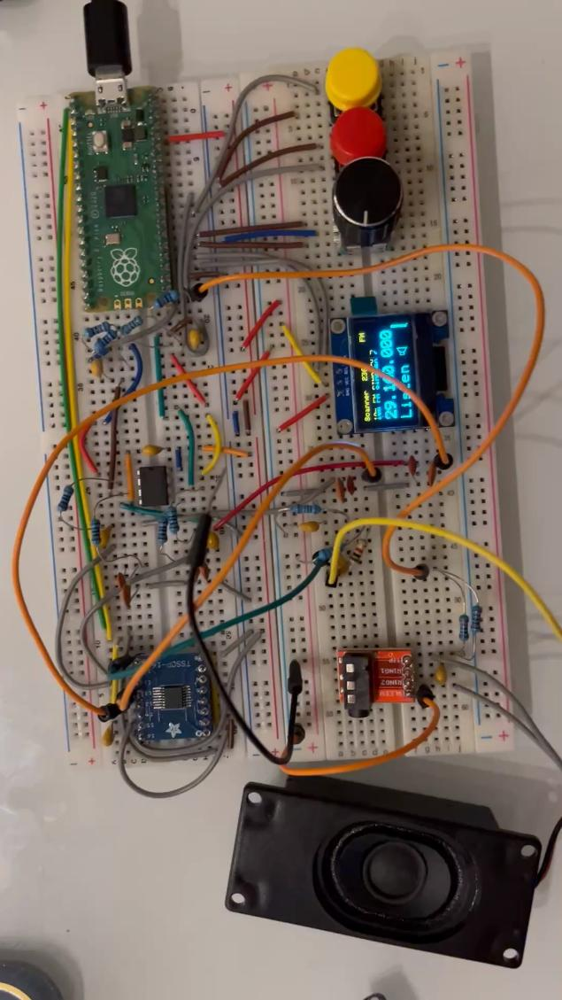
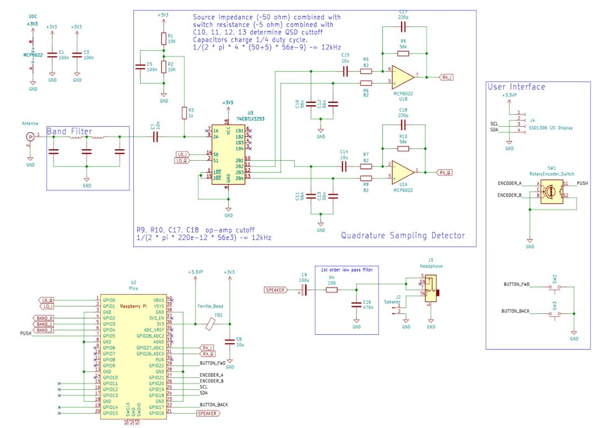

ENEE-3130-1 / RF & Communications · March 2025
Raspberry Pi Pico Software-Defined Radio
Breadboard SDR receiver prototype using quadrature RF downconversion, Raspberry Pi Pico signal processing and OLED/audio interfaces.
Team project: Ali Alalwia and Carson Giles.
Project overview
The project explores software-defined radio using a Raspberry Pi Pico and an analog RF front end. A Tayloe quadrature sampling detector translates incoming RF to lower-frequency I/Q signals suitable for ADC sampling and software demodulation.
Engineering implementation
- RF input filtering and quadrature sampling with a four-way analog switch driven by a PIO-generated local oscillator.
- Op-amp circuitry to produce in-phase and quadrature signals for digital processing.
- KiCad schematic covering power, RF input, detector, microcontroller, user interface and audio output.
- OLED display, controls and headphone or speaker output.
- Antenna evaluation using a You-loop antenna and wideband low-noise amplifier, as documented in the presentation.
Results & scope
The team report describes a functional prototype and software demodulation. The stated design coverage is 0–30 MHz with CW, SSB, AM and FM modes; full-range performance, sensitivity and current consumption have not been independently measured or verified here. No original firmware files were supplied.
Original project gallery

